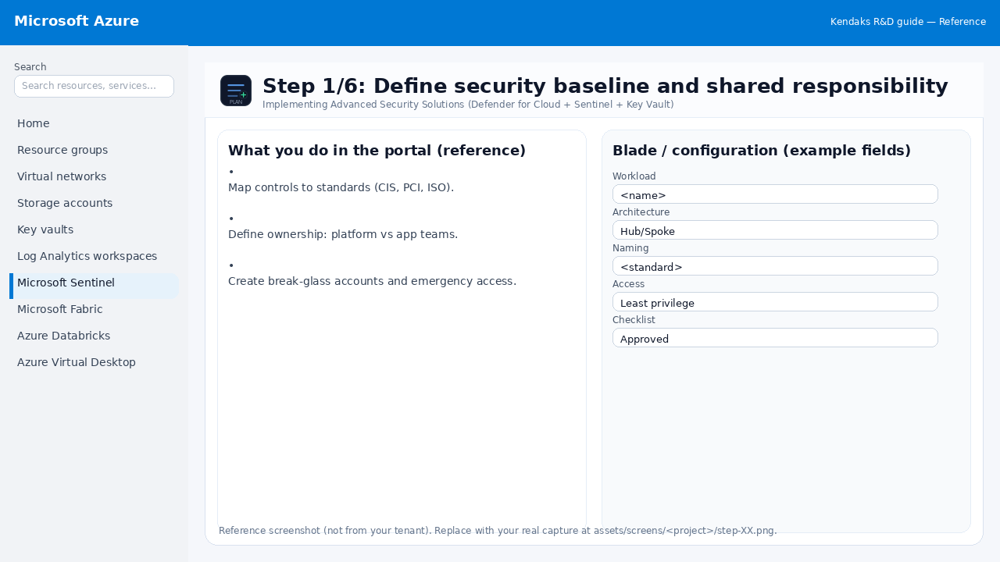
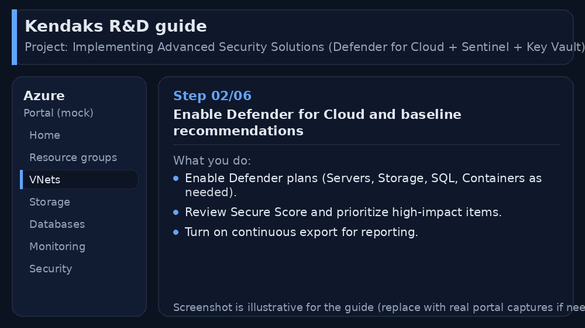
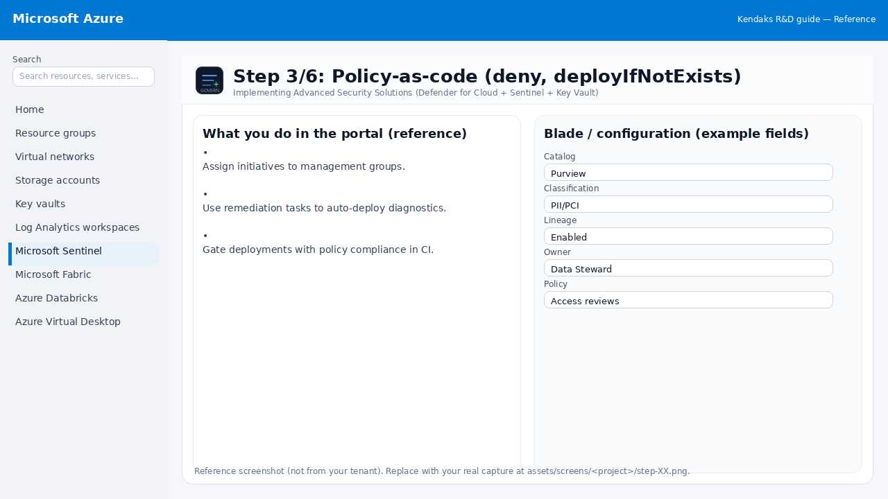
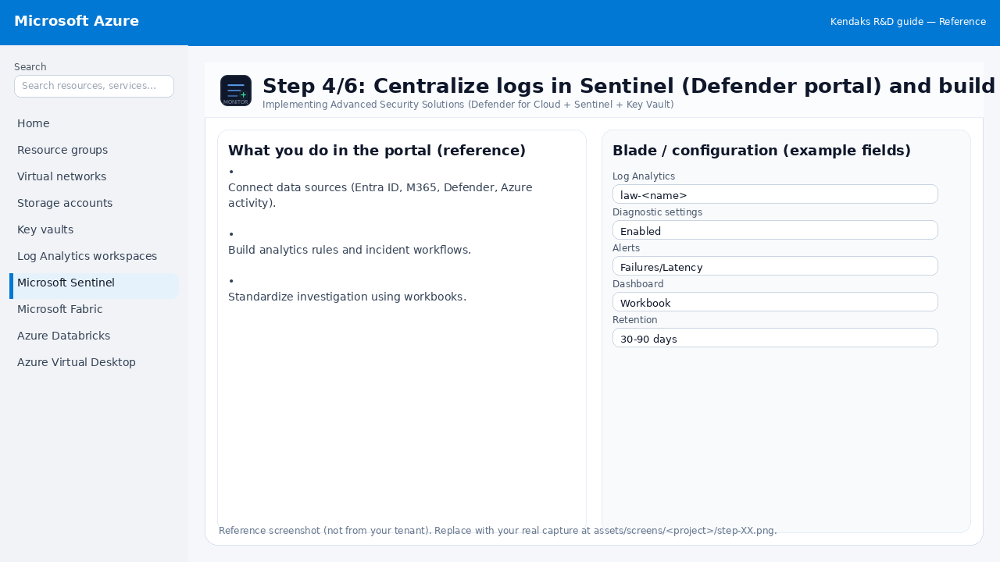
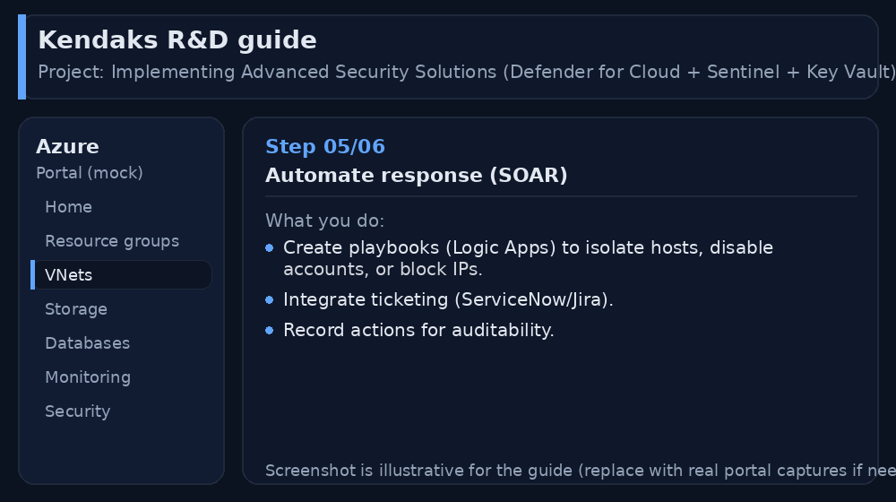
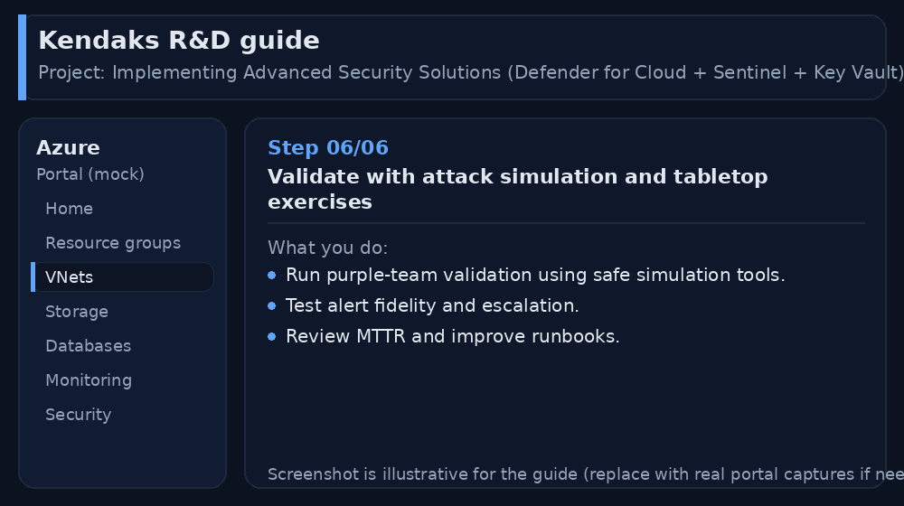

Implementing Advanced Security Solutions (Defender for Cloud + Sentinel + Key Vault)
Category: Security
Scenario: A regulated SaaS must implement continuous posture management, centralized logging, and key management. Example: 'Kendaks Secure SaaS' enforces baseline policies and responds to incidents with playbooks.
Architecture diagram
High-level view of the main components and data/control flows.
Low-level architecture diagram (Visio-style)
Implementation view (networking, security, ops). Click to open full size.
Low-level architecture details
(No low-level text provided.)
Step-by-step implementation
Step 1/6
Define security baseline and shared responsibility

Reference portal screenshot (click to zoom). Replace with your tenant capture if needed.
Map controls to standards (CIS, PCI, ISO). Define ownership: platform vs app teams. Create break-glass accounts and emergency access.
Validation checklist
Stakeholders have signed off the scope, SLAs, and data/security requirements. You have documented naming standards, environments, and ownership (RACI).
Step 2/6
Enable Defender for Cloud and baseline recommendations

Reference portal screenshot (click to zoom). Replace with your tenant capture if needed.
Enable Defender plans (Servers, Storage, SQL, Containers as needed). Review Secure Score and prioritize high-impact items. Turn on continuous export for reporting.
Validation checklist
Security baseline applied (Defender/Policy/WAF/Firewall rules as applicable). No public endpoints unless explicitly approved; private endpoints verified where applicable. Alerts are configured for high-risk events.
Step 3/6
Policy-as-code (deny, deployIfNotExists)

Reference portal screenshot (click to zoom). Replace with your tenant capture if needed.
Assign initiatives to management groups. Use remediation tasks to auto-deploy diagnostics. Gate deployments with policy compliance in CI.
Validation checklist
RBAC/roles are assigned to Entra groups (no direct user assignments). Policies/labels/lineage settings are enabled as required. Audit logs are enabled and flowing to the central workspace/SIEM.
Step 4/6
Centralize logs in Sentinel (Defender portal) and build detections

Reference portal screenshot (click to zoom). Replace with your tenant capture if needed.
Connect data sources (Entra ID, M365, Defender, Azure activity). Build analytics rules and incident workflows. Standardize investigation using workbooks.
Validation checklist
Logs and metrics are flowing (check Log Analytics / Monitor). Alerts trigger correctly (test alert path to email/Teams/ITSM).
Step 5/6
Automate response (SOAR)

Reference portal screenshot (click to zoom). Replace with your tenant capture if needed.
Create playbooks (Logic Apps) to isolate hosts, disable accounts, or block IPs. Integrate ticketing (ServiceNow/Jira). Record actions for auditability.
Validation checklist
Connections/authentication succeed and test messages/records flow through. Retries/DLQ/error handling are configured and validated with a forced failure.
Step 6/6
Validate with attack simulation and tabletop exercises

Reference portal screenshot (click to zoom). Replace with your tenant capture if needed.
Run purple-team validation using safe simulation tools. Test alert fidelity and escalation. Review MTTR and improve runbooks.
Validation checklist
UAT completed with representative users and scenarios. Performance meets baseline; issues tracked and remediated.